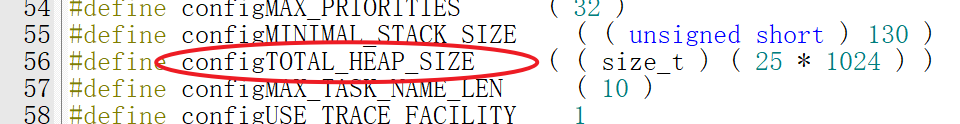
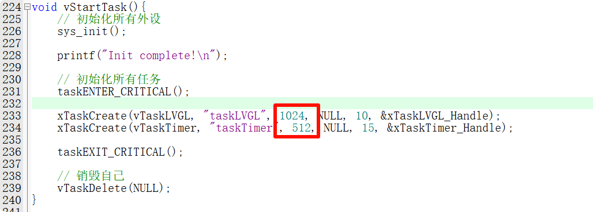
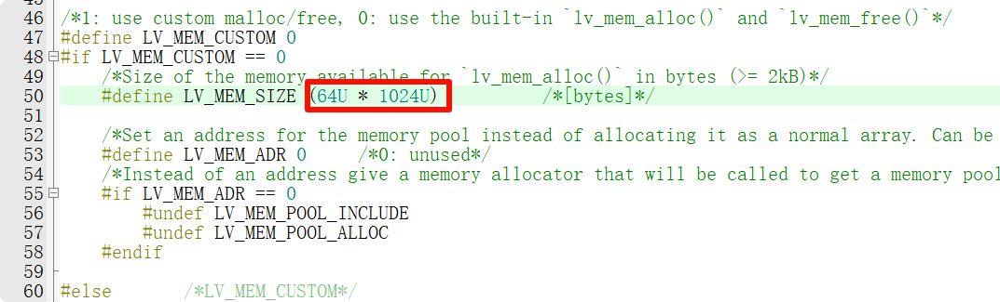

<!DOCTYPE lake>
<h1 data-lake-id="yAINf" id="yAINf"><span data-lake-id="uced88bfa" id="uced88bfa">重要步骤</span></h1><p data-lake-id="uac778482" id="uac778482"><span class="lake-fontsize-12" data-lake-id="u514d7a8f" id="u514d7a8f">在LVGL移植文档</span><a data-lake-id="ubbba01cd" href="https://docs.lvgl.io/8.3/porting/project.html" id="ubbba01cd" rel="noopener noreferrer" target="_blank"><span class="lake-fontsize-12" data-lake-id="u6dd9c998" id="u6dd9c998">https://docs.lvgl.io/8.3/porting/project.html</span></a><span class="lake-fontsize-12" data-lake-id="uff11b4c1" id="uff11b4c1">中， 总共有5个重要步骤：</span></p><ol list="u867af817"><li data-lake-id="u7254d4a4" fid="uedae7c91" id="u7254d4a4"><span class="lake-fontsize-12" data-lake-id="u80418dca" id="u80418dca" style="color: rgb(64, 64, 64); background-color: rgb(252, 252, 252)">调用</span><code data-lake-id="ub9246b9e" id="ub9246b9e"><span data-lake-id="u26241b93" id="u26241b93">lv_init() </span></code><span class="lake-fontsize-12" data-lake-id="u7f46a109" id="u7f46a109" style="color: rgb(64, 64, 64); background-color: rgb(252, 252, 252)">：lvgl的初始化核心</span></li><li data-lake-id="u3b6e1d8d" fid="uedae7c91" id="u3b6e1d8d"><span class="lake-fontsize-12" data-lake-id="u298c1823" id="u298c1823" style="color: rgb(64, 64, 64); background-color: rgb(252, 252, 252)">初始化我们自己的屏幕驱动相关，I2C,SPI,ST7789,CST816T等</span></li><li data-lake-id="uc31471a5" fid="uedae7c91" id="uc31471a5"><span class="lake-fontsize-12" data-lake-id="u5817bc50" id="u5817bc50">调用</span><code data-lake-id="u8543a242" id="u8543a242"><span class="lake-fontsize-12" data-lake-id="u254a81fc" id="u254a81fc">lv_port_disp_init()</span></code><span class="lake-fontsize-12" data-lake-id="ud88e60aa" id="ud88e60aa">（负责显示部分） 和 </span><code data-lake-id="uddcd0156" id="uddcd0156"><span class="lake-fontsize-12" data-lake-id="u3e13ec52" id="u3e13ec52">lv_port_indev_init()</span></code><span class="lake-fontsize-12" data-lake-id="u3cd42560" id="u3cd42560">（负责输入部分）</span></li><li data-lake-id="uf0d5a0c5" fid="uedae7c91" id="uf0d5a0c5"><span class="lake-fontsize-12" data-lake-id="u5da0cbdc" id="u5da0cbdc">调用</span><code data-lake-id="ud0e55c41" id="ud0e55c41"><span class="lake-fontsize-12" data-lake-id="u91cb8ff0" id="u91cb8ff0">lv_tick_inc(x)</span></code><span class="lake-fontsize-12" data-lake-id="ubcc86118" id="ubcc86118"> ：这个是负责维持lvgl核心库的心跳</span></li><li data-lake-id="u6ae04b54" fid="uedae7c91" id="u6ae04b54"><span class="lake-fontsize-12" data-lake-id="u9ad4fe12" id="u9ad4fe12">调用</span><code data-lake-id="u0e1b36e2" id="u0e1b36e2"><span class="lake-fontsize-12" data-lake-id="u9d3a6b82" id="u9d3a6b82">lv_timer_handler()</span></code><span class="lake-fontsize-12" data-lake-id="u43db4daf" id="u43db4daf">： 负责lvgl中的相关任务</span></li></ol><p data-lake-id="u4f7d784c" id="u4f7d784c"><span class="lake-fontsize-12" data-lake-id="ufb60eec0" id="ufb60eec0" style="color: rgb(64, 64, 64); background-color: rgb(252, 252, 252)">​</span><br/></p><p data-lake-id="u3ce932a5" id="u3ce932a5"><span class="lake-fontsize-12" data-lake-id="u3107095a" id="u3107095a" style="color: rgb(64, 64, 64); background-color: rgb(252, 252, 252)">前面1，2，3个步骤都是与初始化相关，我们把它们写在启动任务中</span></p><span class="yuque-card-unsupported">[codeblock]</span><p data-lake-id="u1fd0bcbd" id="u1fd0bcbd"><br/></p><h2 data-lake-id="eZzXS" id="eZzXS"><span data-lake-id="u47357a4e" id="u47357a4e"> </span><span class="lake-fontsize-12" data-lake-id="ua754cafa" id="ua754cafa" style="color: rgb(64, 64, 64); background-color: rgb(252, 252, 252)">lv_tick_inc(x) </span></h2><p data-lake-id="u9a1908d1" id="u9a1908d1"><span class="lake-fontsize-12" data-lake-id="uf26a3afc" id="uf26a3afc">我们需要维持lvgl自身的心跳，以便让它能够处理它自身内部的任务，例如动画的渲染，长按单击事件的判断等等， 我们将这个函数放到FreeRTOS的调用函数中</span></p><p data-lake-id="ud027a285" id="ud027a285"><span class="lake-fontsize-12" data-lake-id="u93abd97a" id="u93abd97a">例如，我们在main.c文件中定义如下名称函数：</span></p><span class="yuque-card-unsupported">[codeblock]</span><p data-lake-id="u79769a72" id="u79769a72"><span class="lake-fontsize-12" data-lake-id="ue3e7b81d" id="ue3e7b81d">注意，定义了这个函数，我们还需要打开它对应的宏，在</span><code data-lake-id="u51df414b" id="u51df414b"><span class="lake-fontsize-12" data-lake-id="ude5cb4b9" id="ude5cb4b9">FreeRTOSConfig.h</span></code><span class="lake-fontsize-12" data-lake-id="u4768795d" id="u4768795d">文件中第57行</span></p><span class="yuque-card-unsupported">[codeblock]</span><h2 data-lake-id="m5pPE" id="m5pPE"><span class="lake-fontsize-12" data-lake-id="u1a9f6808" id="u1a9f6808" style="color: rgb(64, 64, 64); background-color: rgb(252, 252, 252)">lv_timer_handler()</span></h2><p data-lake-id="ud8e1cff5" id="ud8e1cff5"><span class="lake-fontsize-12" data-lake-id="uc053939b" id="uc053939b">lvgl中的所有的任务处理都在这个函数里，lvgl是线程不安全的，这个函数同时只能有一个线程调用它，保险起见我们需要给它的调用加一把锁</span></p><h3 data-lake-id="Jz88m" data-lake-index-type="0" id="Jz88m"><span data-lake-id="u6560b1fb" id="u6560b1fb">声明一把锁</span></h3><span class="yuque-card-unsupported">[codeblock]</span><h3 data-lake-id="mCMpN" data-lake-index-type="0" id="mCMpN"><span data-lake-id="u96fa3be0" id="u96fa3be0">初始化这把锁</span></h3><span class="yuque-card-unsupported">[codeblock]</span><h3 data-lake-id="HPXeY" data-lake-index-type="0" id="HPXeY"><span data-lake-id="uf3a02514" id="uf3a02514">创建一个任务</span></h3><span class="yuque-card-unsupported">[codeblock]</span><h3 data-lake-id="PXJHD" data-lake-index-type="0" id="PXJHD"><span data-lake-id="u33dae01b" id="u33dae01b">编写任务的内容</span></h3><span class="yuque-card-unsupported">[codeblock]</span><p data-lake-id="u1f67c025" id="u1f67c025"><span class="lake-fontsize-12" data-lake-id="u3a157829" id="u3a157829">创建刷新的任务</span></p><span class="yuque-card-unsupported">[codeblock]</span><h2 data-lake-id="PvTFG" id="PvTFG"><br/></h2><h2 data-lake-id="WAGnO" id="WAGnO"><span data-lake-id="uf280e62b" id="uf280e62b">完整示例代码</span></h2><span class="yuque-card-unsupported">[codeblock]</span><p data-lake-id="u23a6d7a1" id="u23a6d7a1"><br/></p><h2 data-lake-id="xSHTx" id="xSHTx"><span data-lake-id="ua1c734e0" id="ua1c734e0">空间不足问题</span></h2><p data-lake-id="u67c3dc94" id="u67c3dc94"><span class="lake-fontsize-12" data-lake-id="u011ae740" id="u011ae740">在一些空间有限的开发板上，可能会出现空间不足，无法编译通过的问题，这个时候我们需要适当调整细节参数</span></p><h3 data-lake-id="v2ztF" id="v2ztF"><span data-lake-id="ucceec36a" id="ucceec36a">降低FreeRTOS默认占用空间大小</span></h3><p data-lake-id="ufc4bf1ae" id="ufc4bf1ae"><span class="lake-fontsize-12" data-lake-id="u724941cb" id="u724941cb">将HEAP_SIZE设置到32K及以下</span></p><p data-lake-id="uf5f27f94" id="uf5f27f94"></p><h3 data-lake-id="kHXZv" id="kHXZv"><span data-lake-id="uc8bc65f9" id="uc8bc65f9">适当加大FreeRTOS任务栈大小</span></h3><p data-lake-id="u092dd2d1" id="u092dd2d1"><span data-lake-id="u9911851f" id="u9911851f">任务栈设置为256及以上</span></p><p data-lake-id="ua1284dbe" id="ua1284dbe"></p><h3 data-lake-id="sY6Su" id="sY6Su"><span data-lake-id="u4c98f3ac" id="u4c98f3ac">降低LVGL内存占用字节数</span></h3><p data-lake-id="u66514838" id="u66514838"><span data-lake-id="ub610111e" id="ub610111e">确保LVGL内存占用不要过大，设置为64K及以下即可</span></p><p data-lake-id="u889837cf" id="u889837cf"><code data-lake-id="u20e4c7dc" id="u20e4c7dc"><span data-lake-id="ud5393f36" id="ud5393f36">lv_conf.h</span></code><span data-lake-id="udc5cdf7a" id="udc5cdf7a">  或 </span><code data-lake-id="ue1221df1" id="ue1221df1"><span data-lake-id="uee63fde5" id="uee63fde5">lv_conf_cmsis.h</span></code></p><p data-lake-id="u9bea4211" id="u9bea4211"></p><h3 data-lake-id="FPiXJ" id="FPiXJ"><span data-lake-id="u92949231" id="u92949231">加大栈内存大小</span></h3><p data-lake-id="u532ade8a" id="u532ade8a"><span data-lake-id="u75a2b917" id="u75a2b917">修改</span><code data-lake-id="u8be302cf" id="u8be302cf"><span data-lake-id="u959e64e6" id="u959e64e6">startup_gd32f407_427.s</span></code><span data-lake-id="u6a3bd107" id="u6a3bd107">堆内存为0x800</span></p><span class="yuque-card-unsupported">[codeblock]</span><p data-lake-id="ua2ecf0c8" id="ua2ecf0c8"><span data-lake-id="ud35326bb" id="ud35326bb">​</span><br/></p>